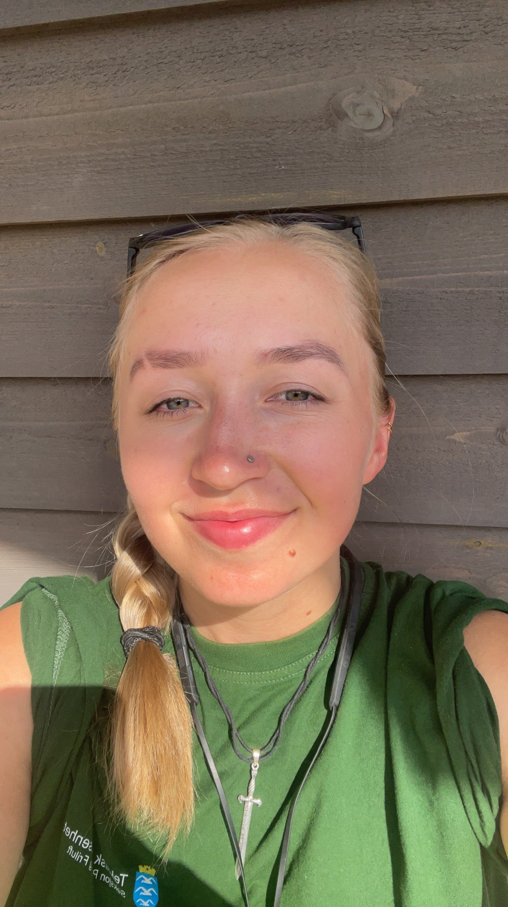

parodi.mp4
02:30 / VIDEOParodi · En liten pause fra koden.
Åpne video ↗marie@portfolio:~$ whoami
IT-student / Fullstack
Jeg ønsker å utvikle digitale løsninger som kombinerer god funksjonalitet med en enkel og tilgjengelig brukeropplevelse. Nå ser jeg etter en relevant problemstilling og en bedrift å samarbeide med om bachelorprosjekt.

Jeg studerer IT og informasjonssystemer ved Universitetet i Agder. Gjennom studiet har jeg fått erfaring med hele utviklingsprosessen, fra å forstå brukerbehov og utforme løsninger til programmering, databaser, testing og dokumentasjon.
Jeg trives med både frontend og backend og ønsker å utvikle meg videre som fullstackutvikler. Jeg er spesielt interessert i brukeropplevelse og universell utforming. For meg bør en god løsning ikke bare fungere teknisk, men også være oversiktlig og enkel å bruke.
Jeg liker å sette meg inn i nye problemområder, arbeide selvstendig og ta ansvar for at oppgaver blir fulgt fra idé til ferdig resultat. Samtidig verdsetter jeg tydelige forventninger, faglige diskusjoner og jevn kontakt med dem løsningen utvikles for.
projects/ └── easyfisk/
Fra brukerbehov til digital løsning.
I praksis hos Mandalselva Elveeigarlag utvikler jeg EasyFisk, en app som samler informasjon og praktiske funksjoner for fiskere. Prosjektet har gitt meg erfaring med å omsette behov fra en reell oppdragsgiver til prioriterte krav, grensesnitt og tekniske løsninger.
✓Kravkartlegging og dialog med oppdragsgiver
✓Planlegging av funksjoner og brukerflyt
✓Frontend, backend og database
✓Testing, dokumentasjon og iterativ forbedring
Parodi · En liten pause fra koden.
Åpne video ↗Studiet dekker både teknisk utvikling og hvordan digitale løsninger fungerer i organisasjoner. Dette er verktøyene og temaene jeg har mest erfaring med så langt.
Programmering: klasser, objekter, arv, polymorfisme, kodekvalitet og utvikling av større applikasjoner.
Systemutvikling: brukerbehov, krav, analyse, modellering, arkitektur, versjonskontroll og testing.
Data og databaser: ER-modeller, relasjonsdatabaser, SQL, normalisering, dataintegritet og kobling mellom app og database.
Design og virksomhet: interaksjonsdesign, prototyper, tjenestedesign, digitalisering, organisasjon og prosjektstyring.
VALGFAG OG FORDYPNING
Big-O, lister, køer, trær, hashing, sortering, søk og grafalgoritmer.
Trusler, sårbarheter, sikkerhetspolicy og sikkerhetskultur i organisasjoner.
Tilgjengelige løsninger, inkluderende design og vurdering av brukergrensesnitt.
Videre arbeid med databaser, datalagring og robuste dataløsninger.
Maskinlæring, dyp læring, generativ KI, prompting og utvikling av en enkel KI-applikasjon.
Et bachelorprosjekt med en reell utfordring og tydelig verdi for brukerne eller virksomheten.
Jeg er åpen for ulike bransjer og problemstillinger. Det viktigste er at prosjektet gir rom for å undersøke et faktisk behov og utvikle eller forbedre en digital løsning.
UTDANNING
Universitetet i Agder
Fullstack-utvikling, brukeropplevelse og universell utforming. Se kompetanse og praksisprosjekt for mer om min erfaring.